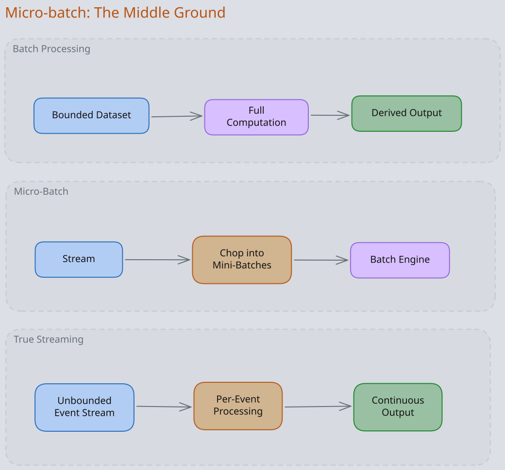
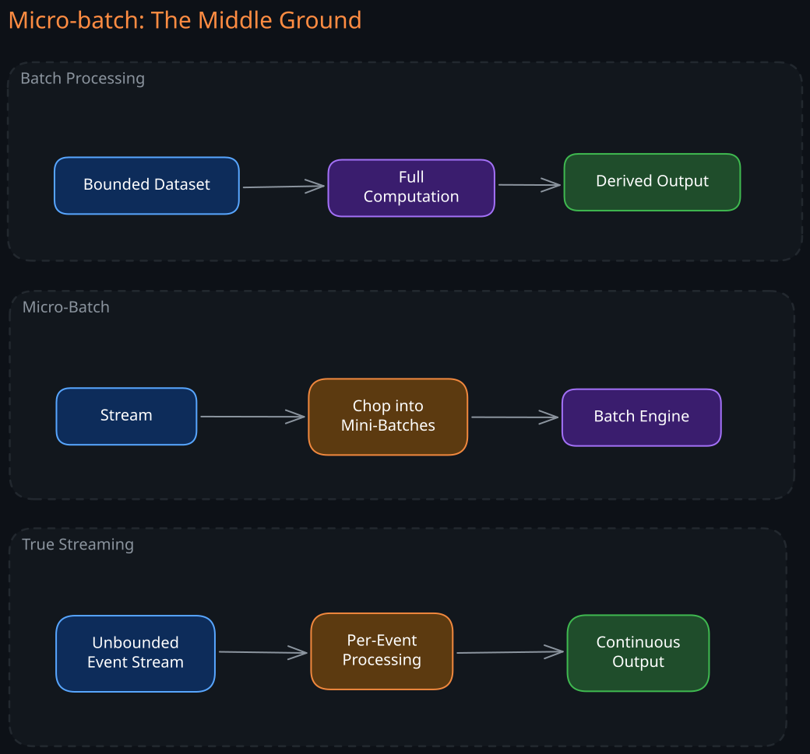
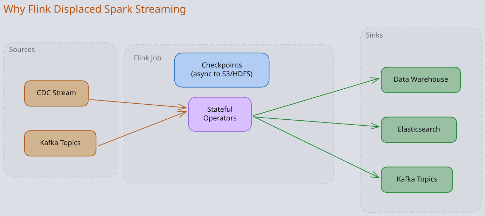
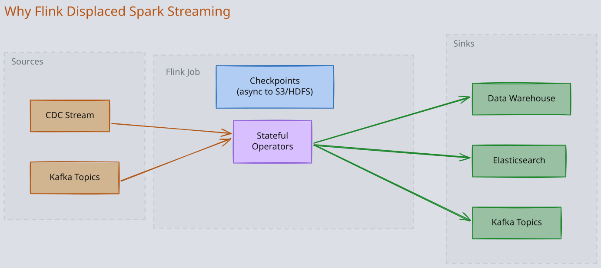
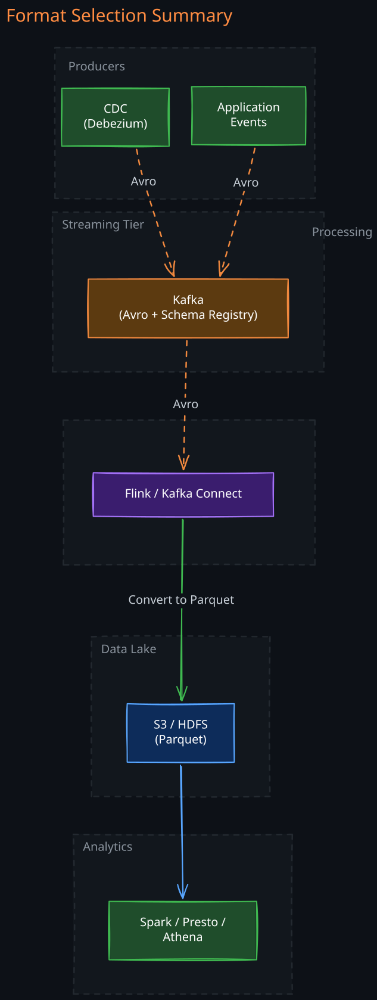
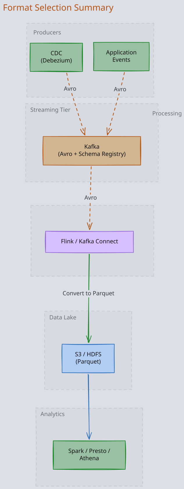

The Story
In 2004, Google published the MapReduce paper and the world rushed to build Hadoop. But Google had already moved on internally — MapReduce was too rigid for iterative workloads, and they’d replaced it with FlumeJava and later Cloud Dataflow. Yahoo and the open-source community spent a decade catching up to a system Google had already deprecated. Jeff Dean later admitted the programming model was too constrained. The lesson: a published paper is a snapshot of what a company was doing, not what they’re doing now. By the time you read it, the authors may have already abandoned it.
The central challenge of data-intensive systems is not storing large volumes of data — databases have scaled for decades. The real challenge is deriving value from data continuously, at a pace that matches business decisions. A fraud detection system that runs once a day is useless against a fraudster who acts in milliseconds. A recommendation engine that updates weekly cannot compete with one that adapts in real time.
This note covers the two fundamental paradigms for processing data at scale — batch and stream — and the serialization formats that determine how efficiently data moves through pipelines. For deep dives into the internals of each paradigm, see Batch Processing and Stream Processing. For Kafka internals, see 01-Kafka.
Related Topics: 03-Data-Pipeline, 01-Kafka, Encoding and Evolution, 03-Flink
1. Batch vs Stream: Two Paradigms for Data Processing
1. The Batch Model
Batch processing operates on bounded, immutable datasets. You accumulate data — a day’s worth of logs, a month of transactions — and run a computation over the entire set to produce a derived output. MapReduce, 04-Spark, and Hive all follow this model.
The defining property is that nobody is waiting for the result. Because latency does not matter, batch systems optimize ruthlessly for throughput: maximize parallelism, minimize coordination, and process data where it already lives on disk.
Batch excels at:
- Full dataset recomputations (rebuild a search index, retrain an ML model)
- Complex multi-pass algorithms (graph traversal, iterative optimization)
- Correctness guarantees through deterministic re-execution — if a job fails, discard partial output and re-run
The limitation is latency. A batch job that runs at midnight cannot act on events that happened at 11:59 PM until the next run. For many use cases — fraud detection, real-time dashboards, dynamic pricing — this delay is unacceptable.
2. The Stream Model
Stream processing treats data as an unbounded, continuously arriving sequence of events. Each event is processed as it arrives, with no artificial batch boundaries. 03-Flink, 01-Kafka Streams, and Samza follow this model.
The defining property is that the computation never finishes. It runs continuously, maintaining state across events, reacting to each new data point within milliseconds.
Stream excels at:
- Low-latency reactions (fraud detection, alerting, live personalization)
- Continuous aggregations (real-time dashboards, running totals)
- Event-driven architectures where downstream systems must react immediately
The limitation is complexity. You cannot sort an unbounded dataset. Events arrive out of order. Late-arriving data must be handled gracefully. State must survive failures. These challenges require fundamentally different abstractions compared to batch.
3. Micro-batch: The Middle Ground
Spark Streaming introduced a hybrid approach: chop the continuous stream into tiny batches (typically 0.5-2 seconds), then process each mini-batch using the same batch engine. This gives you the programming model of batch with latency measured in seconds rather than hours.
The appeal is obvious — if you already have a 04-Spark cluster for batch, you can reuse the same engine, same APIs, and same fault tolerance mechanisms for streaming. But micro-batching has a fundamental limitation: it creates artificial time boundaries. An event at the edge of a micro-batch window may need to wait for the next batch to be processed alongside related events. For true millisecond-latency requirements, this model falls short.


2. Why Kafka and Flink Won
1. The Problem Before Kafka
Before Kafka, moving data between systems was a nightmare of point-to-point integrations. If you had 5 source systems and 5 destination systems, you needed up to 25 custom integrations — each with its own protocol, failure handling, and backpressure mechanism. Adding a new system meant building N new connectors.
The deeper problem was that traditional message brokers (RabbitMQ, ActiveMQ) delete messages after delivery. This means:
- You cannot replay events after a consumer processes them
- A new consumer cannot read historical data — it only sees new messages
- If a consumer has a bug, the data it already consumed is gone
Kafka solved this by treating the message log as a durable, replayable, append-only storage system. Messages are retained for a configurable period (often days or weeks), and consumers track their own position (offset) in the log. This single design decision enables:
- Decoupled producers and consumers — producers write without knowing who reads; consumers read at their own pace
- Replay — reprocess historical data by resetting the consumer offset
- Multiple consumer groups — different systems read the same stream independently, at different speeds
- Fault tolerance — a crashed consumer simply resumes from its last committed offset
Kafka became the central nervous system of modern data architectures because it turned event streams into a reusable, durable data asset rather than ephemeral messages.
2. Why Flink Displaced Spark Streaming
Spark Streaming was the first widely adopted stream processing framework, but it made a pragmatic compromise: use the existing batch engine with small batch intervals. This micro-batch approach works well enough for many use cases, but it has structural limitations that Flink’s architecture avoids.
Flink processes events one at a time as they arrive. There are no batch intervals, no artificial time boundaries. This matters for several reasons:
- Latency: Flink achieves true millisecond latency. Spark Streaming’s latency floor is bounded by its micro-batch interval — even at 500ms intervals, 95th-percentile latency can exceed a second when you factor in scheduling overhead.
- Event time processing: Flink has first-class support for event time (the time an event actually occurred, as opposed to when it was processed). It uses watermarks — periodic signals that declare “all events up to time T have arrived” — to reason about completeness. Spark Streaming can do event-time processing, but it was bolted on rather than designed in.
- State management: Flink treats state as a first-class citizen. Operators can maintain local state (backed by RocksDB for large state), and the framework automatically snapshots state to durable storage via asynchronous checkpoints. On failure, Flink restores the entire job to the last consistent checkpoint — including the Kafka offsets being read — achieving exactly-once processing guarantees.
- Savepoints: Flink allows you to take a consistent snapshot of the entire job’s state, stop the job, modify the code or parallelism, and restart from the savepoint. This enables zero-downtime upgrades and schema migrations of running streaming jobs — something that is extremely difficult with Spark Streaming.


3. When to Choose What
| Scenario | Best Choice | Why |
|---|---|---|
| Sub-second latency, complex event processing | 03-Flink | True per-event processing, native event time, powerful state management |
| Already running Spark, latency of 1-5s acceptable | 04-Spark Structured Streaming | Reuse existing cluster, unified batch + stream API |
| Simple transformations, Kafka-native | 01-Kafka Streams | No separate cluster needed — runs as a library inside your application |
| Full dataset recomputation, ML training | 04-Spark batch | Optimized for throughput over bounded datasets |
The deciding factor is usually latency requirements and state complexity. If you need millisecond latency with large keyed state (e.g., session windows per user across millions of users), Flink is the clear winner. If you need to enrich Kafka events with simple lookups and your latency budget is generous, Kafka Streams avoids the operational overhead of a separate processing cluster.
3. Serialization Formats for Data Pipelines
Choosing a serialization format for a data pipeline is not a matter of preference — it directly determines schema evolution safety, query performance, storage cost, and the degree of coupling between producers and consumers. For a deep treatment of encoding mechanics and compatibility, see Encoding and Evolution. This section focuses on which format to use where in a data pipeline and why.
1. The Physical Difference: Row vs Column Storage
The most important distinction between serialization formats is whether they store data row-wise or column-wise, because this determines what operations are fast.
- Row-oriented formats (Avro, Protobuf, JSON) store all fields of a single record together. To read one record, you perform a single sequential read. To scan a single column across millions of records, you must read every record and discard the fields you do not need. Row formats are ideal for write-heavy workloads and message transport — you write complete records and read complete records.
- Columnar formats (Parquet, ORC) store all values of a single column together. To read one column across a million records, you perform a single sequential read of tightly packed, homogeneous data that compresses extremely well. To read a single complete record, you must seek across every column chunk. Columnar formats are ideal for analytical queries that aggregate a few columns over many rows.
This physical layout is why Avro flows through Kafka pipelines and Parquet sits in data lakes — it is not convention, it is physics.
2. Why Avro for Kafka and CDC
Avro dominates the streaming tier of data pipelines for three reinforcing reasons:
- Schema travels with the data. An Avro file embeds the writer’s schema in its header. In Kafka, the Confluent Schema Registry stores schemas separately, and each message carries a compact schema ID. A consumer that has never seen this producer’s data before can look up the schema and decode the message without any out-of-band coordination. This is what makes truly decoupled producers and consumers possible.
- Schema evolution is safe by default. Avro resolves differences between the writer’s schema and the reader’s schema at read time. If a producer adds a new field with a default value, old consumers simply ignore it (forward compatibility). If a consumer expects a field that the producer did not write, Avro fills in the default (backward compatibility). The Schema Registry enforces compatibility rules before a new schema version is even registered, catching breaking changes at deploy time rather than in production.
- Compact binary encoding without field tags. Unlike Protobuf, which encodes field numbers into every message, Avro encodes only values — the schema provides the field ordering. This makes Avro messages slightly smaller and decoding slightly faster for high-throughput pipelines. The tradeoff is that you always need the schema to decode the data, but in a Kafka ecosystem with a Schema Registry, the schema is always available.
3. Why Parquet for Data Lakes and Analytics
Once data leaves the streaming tier and lands in a data lake (S3, HDFS), the access pattern changes completely. Instead of reading individual records, analysts run queries that scan millions of rows but touch only a few columns: SELECT avg(price) FROM orders WHERE region = 'US'.
Parquet is purpose-built for this access pattern:
- Column pruning — the query engine reads only the columns referenced in the query. A table with 200 columns where you need 3 reads roughly 1.5% of the data. This alone can turn a 10-minute query into a 10-second query.
- Predicate pushdown — Parquet stores min/max statistics for each column chunk in each row group. If a row group’s
regioncolumn has min=UKand max=UK, the engine skips the entire row group without reading any data. This is effectively a free index on every column. - Compression efficiency — because each column contains homogeneous data (all integers, all strings of similar length), compression algorithms achieve much higher ratios than on row-oriented data where different types are interleaved. Parquet typically achieves 5-10x compression over equivalent JSON.
Parquet file structure:
File Header
Row Group 1
Column Chunk: user_id [data pages + dictionary page]
Column Chunk: timestamp [data pages]
Column Chunk: amount [data pages]
Row Group 2
...
File Footer (schema + column statistics + offsets)
The footer at the end of the file contains the schema and all metadata, which means a query engine can read the footer first, determine which row groups and columns to read, and issue precise byte-range reads — critical for performance on object stores like S3 where random access is expensive.
4. Why Not Protobuf for Data Pipelines?
Protobuf excels at low-latency RPC between microservices (it is the native format of gRPC). But it has specific limitations in data pipeline contexts:
- Schema is not embedded. A consumer cannot decode a Protobuf message without the
.protofile that was used to produce it. In a Kafka pipeline with many independent producers and consumers, this creates tight coupling — both sides must agree on the.protoversion, and there is no standard mechanism for schema negotiation comparable to Avro’s Schema Registry integration. - Schema evolution requires manual discipline. Protobuf supports adding new fields and deprecating old ones, but the rules are enforced by developer convention, not by tooling. You must never reuse a field number. You must never change a field’s type. There is no automated compatibility check at registration time like the Confluent Schema Registry provides for Avro.
- Poor analytics engine support. Spark, Hive, Presto, and Athena all have native Avro and Parquet readers. Protobuf requires custom deserializers, additional library dependencies, and manual schema management — friction that multiplies across a data platform.
5. Format Selection Summary
| Pipeline Stage | Format | Why |
|---|---|---|
| Event streaming via 01-Kafka | Avro | Schema registry integration, safe evolution, compact binary, decoupled producers/consumers |
| CDC via Debezium | Avro | Self-describing, backward/forward compatible, native Debezium support |
| Service-to-service RPC | Protobuf | Lowest latency, native gRPC support, code generation |
| Data lake storage | Parquet | Column pruning, predicate pushdown, compression, native support in all query engines |
| Debugging and logging | JSON | Human-readable, schema-less, easy to inspect |
| 01-Kafka to data lake landing | Avro in Kafka, convert to Parquet on landing | Optimizes for both streaming access and analytical queries |
The last row is the most common production pattern: events flow through Kafka in Avro, a connector (Kafka Connect with S3 Sink) or a Flink job converts them to Parquet and writes to the data lake. This gives you the best of both worlds — row-oriented access for streaming and columnar access for analytics.


Revision Summary
- Batch processing optimizes for throughput over bounded datasets; stream processing optimizes for latency over unbounded event streams. Micro-batch is a pragmatic middle ground that reuses batch infrastructure but introduces artificial time boundaries.
- Kafka became the backbone of modern data architectures by treating the message log as durable, replayable storage — enabling decoupled producers and consumers, replay, and multiple independent consumer groups.
- Flink displaced Spark Streaming for latency-sensitive workloads because it processes events individually (no micro-batching), has first-class event time support via watermarks, and treats state as a checkpointed, recoverable first-class citizen.
- Avro dominates Kafka pipelines because its schema travels with the data (via Schema Registry), schema evolution is enforced automatically, and encoding is compact. Parquet dominates data lakes because columnar storage enables column pruning, predicate pushdown, and superior compression for analytical queries.
- The standard production pattern is Avro in Kafka, convert to Parquet on landing in the data lake — optimizing for both streaming and analytical access patterns.
Deep Understanding Questions
- A Flink job consumes from Kafka with exactly-once semantics enabled. The job crashes after processing events but before the next checkpoint completes. What happens to the events that were processed but not checkpointed? How does Flink ensure they are not double-counted in the output? Ans:
- You are running Spark Structured Streaming with a 2-second micro-batch interval. An event arrives 1ms before the batch boundary and a causally related event arrives 1ms after. How does this boundary affect your ability to process them together? How would Flink handle the same scenario? Ans:
- A Kafka topic uses Avro with the Confluent Schema Registry set to BACKWARD compatibility mode. A producer wants to remove a field that has no default value. What happens when it tries to register the new schema? What if the mode were FORWARD instead? Ans:
- Your data lake stores Parquet files with row groups of 128MB. An analyst runs
SELECT count(*) FROM events WHERE user_id = 'abc123'. Explain exactly how predicate pushdown and column pruning interact to minimize I/O. What happens if user_id values are randomly distributed vs. sorted? Ans: - A Flink job maintains 500GB of keyed state backed by RocksDB. Checkpointing to S3 takes 3 minutes. If the checkpoint interval is 5 minutes and the job crashes 4 minutes after the last successful checkpoint, how much reprocessing is required? What are the tradeoffs of decreasing the checkpoint interval? Ans:
- You are migrating a Kafka pipeline from JSON to Avro. During the migration, some producers send JSON and some send Avro. How would you design the consumer to handle both formats? What are the risks during this transition period? Ans:
- A team uses Protobuf for Kafka messages because their microservices already use gRPC. Six months later, the data engineering team needs to build an analytics pipeline on top of these Kafka topics. What specific problems will they encounter, and what is the least disruptive path forward? Ans:
- Why does Parquet store statistics (min/max values) per column chunk in the file footer rather than in a separate metadata file? What are the implications for query planning when reading from S3 vs. HDFS? Ans:
- A Flink job reads from Kafka and writes to both Elasticsearch (for real-time search) and S3 (as Parquet for analytics). The Elasticsearch sink supports at-least-once delivery but not exactly-once. How does this affect the end-to-end guarantees of the pipeline? What strategies can mitigate duplicate writes to Elasticsearch? Ans:
- Kafka retains messages for 7 days. A new Flink consumer group starts reading from the earliest offset on a topic that receives 1TB/day. What is the impact on the Kafka cluster? How does this differ from a traditional message broker like RabbitMQ where replay is not possible? Ans: